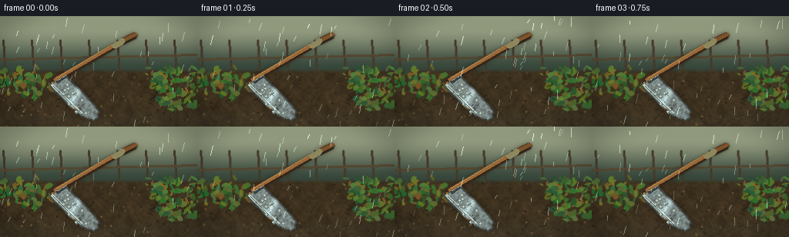
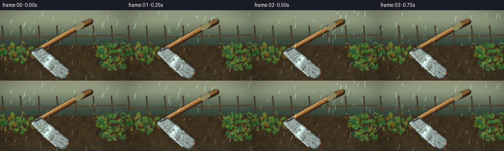
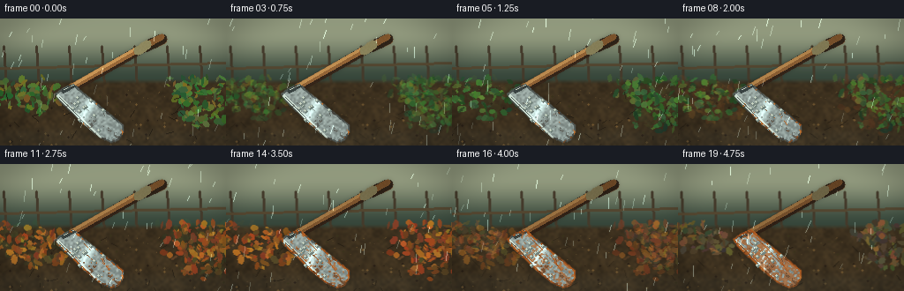
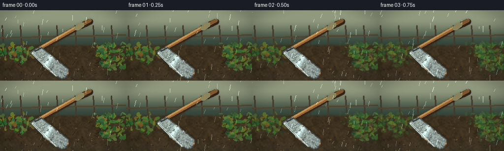
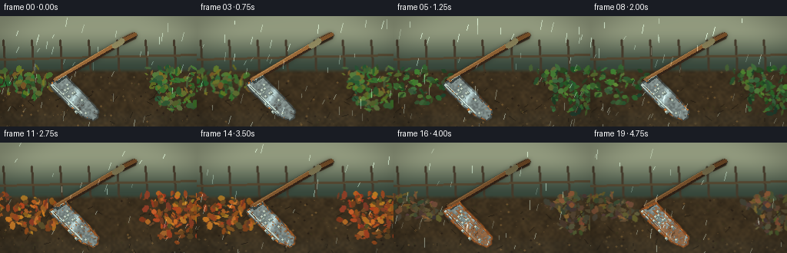
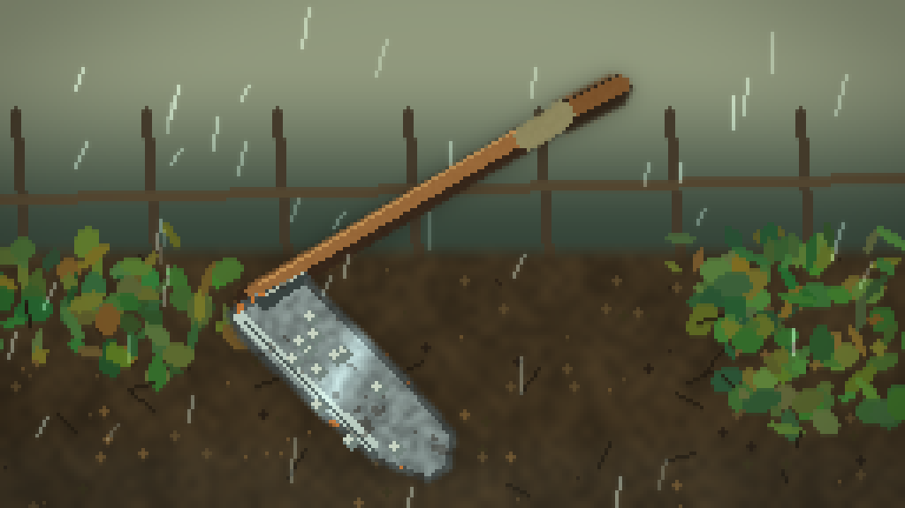
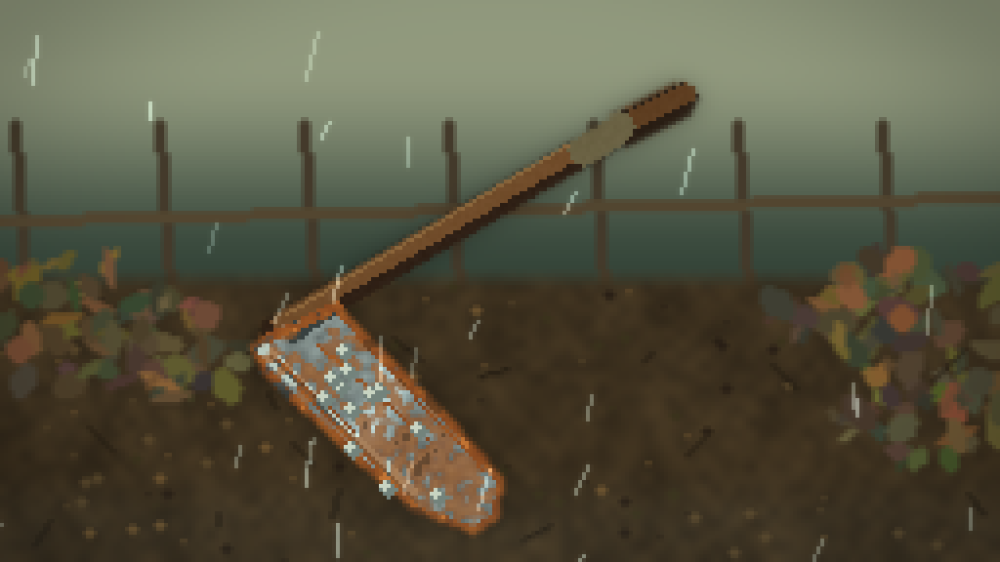
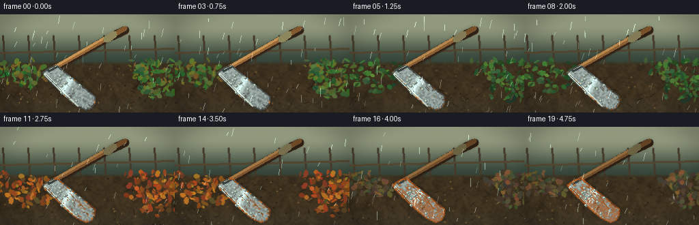
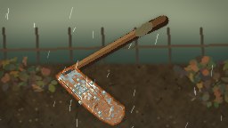
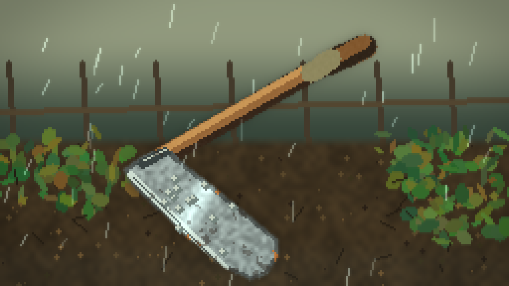

CODING AGENTS AS PIXEL WORLD MODELS
traex/DeepSeek-V4.1-Flash · material_0045
点击播放 · 原生 RGB 像素
此结果可播放，但该运行尚未通过最终提交审核。页面展示不代表评测通过。
逐轮保存的候选
回放视频、检查图与代码变化。
每份候选均可单独播放。实际图片检查记录在下方工具轨迹中。
候选 01播放与检查图
点击播放 · 原生 RGB 像素


展开代码变化
--- 上一保存版本
+++ 本次保存版本
@@ -0,0 +1,321 @@
+from pathlib import Path
+
+import cv2
+import numpy as np
+from PIL import Image, ImageDraw
+
+import artifact_io
+
+
+W, H, N = 256, 144, 20
+CASE_DIR = Path(__file__).resolve().parent
+RNG = np.random.default_rng(45)
+
+
+def smoothstep(x):
+ x = np.clip(x, 0.0, 1.0)
+ return x * x * (3.0 - 2.0 * x)
+
+
+def noise_field(shape, scale, seed):
+ rng = np.random.default_rng(seed)
+ small = rng.random((max(2, shape[0] // scale + 2), max(2, shape[1] // scale + 2)))
+ small = cv2.resize(small.astype(np.float32), (shape[1], shape[0]), interpolation=cv2.INTER_CUBIC)
+ small -= small.min()
+ small /= max(1e-6, small.max())
+ return small
+
+
+def soft_ellipse(canvas, center, axes, color, angle=0.0, blur=0):
+ layer = np.zeros_like(canvas)
+ cv2.ellipse(layer, center, axes, angle, 0, 360, color, -1, cv2.LINE_AA)
+ if blur:
+ layer = cv2.GaussianBlur(layer, (0, 0), blur)
+ return np.maximum(canvas, layer)
+
+
+def leaf(draw, x, y, length, width, angle, fill, outline=None):
+ a = np.deg2rad(angle)
+ ux, uy = np.cos(a), np.sin(a)
+ vx, vy = -uy, ux
+ pts = []
+ for t in np.linspace(-1, 1, 9):
+ offset = width * (1 - abs(t)) ** 0.65 * np.sin(np.pi * (t + 1) / 2)
+ pts.append((x + ux * length * t + vx * offset, y + uy * length * t + vy * offset))
+ for t in np.linspace(1, -1, 9):
+ offset = width * (1 - abs(t)) ** 0.65 * np.sin(np.pi * (t + 1) / 2)
+ pts.append((x + ux * length * t - vx * offset, y + uy * length * t - vy * offset))
+ draw.polygon([(round(a), round(b)) for a, b in pts], fill=fill, outline=outline)
+ draw.line(
+ [(round(x - ux * length * 0.82), round(y - uy * length * 0.82)),
+ (round(x + ux * length * 0.82), round(y + uy * length * 0.82))],
+ fill=outline or tuple(max(0, c - 18) for c in fill), width=1
+ )
+
+
+def foliage_layer(season):
+ """Paint a layered garden background whose colors and density change by season."""
+ layer = np.zeros((H, W, 3), np.float32)
+ yy, xx = np.mgrid[:H, :W]
+ sky_mix = smoothstep((70 - yy) / 55)
+ sky_a = np.array([54, 69, 58], np.float32)
+ sky_b = np.array([145, 151, 125], np.float32)
+ sky = sky_a + (sky_b - sky_a) * sky_mix[..., None]
+ layer[:] = sky
+
+ # Muted distant shrubs and a soft treeline.
+ for i in range(20):
+ x = int((i * 37 + 9) % W)
+ y = int(43 + 8 * np.sin(i * 1.7))
+ col = np.array([47 + (i % 3) * 7, 68 + (i % 4) * 5, 43], np.float32)
+ layer = soft_ellipse(layer, (x, y), (17 + i % 9, 10 + i % 6), col.tolist(), blur=3)
+
+ # A trellis / fence at the edge of the garden gives the seasons a stage.
+ for x in range(4, W, 37):
+ cv2.line(layer, (x, 31), (x + 4, 91), (68, 58, 43), 2, cv2.LINE_AA)
+ cv2.line(layer, (0, 56), (W, 50), (83, 69, 48), 2, cv2.LINE_AA)
+ cv2.line(layer, (0, 78), (W, 75), (65, 54, 40), 1, cv2.LINE_AA)
+
+ # Broad wet earth plane.
+ soil_top = 67
+ mask = smoothstep((yy - soil_top) / 7)
+ soil_noise = noise_field((H, W), 3, 71)
+ soil_noise2 = noise_field((H, W), 11, 72)
+ wet = np.array([50, 40, 27], np.float32)
+ dry = np.array([78, 61, 38], np.float32)
+ soil = wet + (dry - wet) * (0.25 + 0.6 * soil_noise[..., None])
+ soil *= (0.82 + 0.22 * soil_noise2[..., None])
+ layer = layer * (1 - mask[..., None]) + soil * mask[..., None]
+
+ # Fine leaf litter and pebbles.
+ for i in range(115):
+ x = int(RNG.integers(0, W))
+ y = int(RNG.integers(73, H))
+ tone = int(RNG.integers(0, 4))
+ colors = [(40, 30, 21), (90, 71, 43), (58, 50, 28), (112, 84, 47)]
+ cv2.circle(layer, (x, y), int(RNG.integers(0, 2)), colors[tone], -1, cv2.LINE_AA)
+
+ # Seasonal foliage, deliberately asymmetrical around the tool.
+ foliage_rng = np.random.default_rng(304 + season)
+ season_cols = [
+ [(48, 92, 48), (64, 112, 51), (87, 124, 55), (112, 107, 42)],
+ [(38, 72, 40), (50, 91, 45), (66, 112, 55), (87, 124, 52)],
+ [(136, 65, 35), (164, 81, 31), (188, 111, 39), (105, 72, 38)],
+ [(83, 74, 52), (102, 81, 47), (120, 91, 54), (70, 65, 48)],
+ ][season]
+ if season == 0:
+ clusters = [(16, 78, 30), (44, 88, 23), (238, 83, 35), (215, 75, 23), (232, 105, 23)]
+ elif season == 1:
+ clusters = [(12, 76, 38), (43, 89, 32), (239, 83, 40), (216, 72, 31), (234, 108, 27)]
+ elif season == 2:
+ clusters = [(19, 85, 32), (44, 95, 30), (240, 80, 36), (216, 83, 34), (238, 109, 30)]
+ else:
+ clusters = [(15, 81, 22), (43, 88, 18), (241, 84, 25), (217, 76, 17), (237, 106, 19)]
+ for cx, cy, radius in clusters:
+ count = radius + 18
+ for _ in range(count):
+ ang = foliage_rng.uniform(0, np.pi * 2)
+ rad = radius * np.sqrt(foliage_rng.random())
+ x = cx + np.cos(ang) * rad * 1.25
+ y = cy + np.sin(ang) * rad * 0.8
+ if y < 66 or y > H + 10:
+ continue
+ col = season_cols[int(foliage_rng.integers(0, len(season_cols)))]
+ col = tuple(int(c * foliage_rng.uniform(0.78, 1.13)) for c in col)
+ cv2.ellipse(
+ layer, (int(x), int(y)), (int(foliage_rng.integers(2, 6)), int(foliage_rng.integers(1, 4))),
+ int(foliage_rng.integers(0, 180)), 0, 360, col, -1, cv2.LINE_AA
+ )
+
+ # Dark stems and occasional fallen leaves establish depth.
+ for i in range(18):
+ x = int(foliage_rng.integers(0, W))
+ y = int(foliage_rng.integers(82, H))
+ cv2.line(layer, (x, y), (x + int(foliage_rng.integers(-8, 9)), y + int(foliage_rng.integers(2, 9))),
+ (36, 28, 18), 1, cv2.LINE_AA)
+
+ return np.clip(layer, 0, 255)
+
+
+def blade_mask():
+ mask = np.zeros((H, W), np.float32)
+ # Broad shovel blade with a rounded nose and a narrower socket.
+ poly = np.array([
+ (73, 84), (86, 78), (113, 105), (128, 122), (127, 132),
+ (121, 136), (105, 130), (88, 115), (68, 96), (64, 88)
+ ], np.int32)
+ cv2.fillPoly(mask, [poly], 1.0, cv2.LINE_AA)
+ # Handle runs from the lower left toward the upper right.
+ cv2.line(mask, (69, 85), (158, 33), 1.0, 6, cv2.LINE_AA)
+ cv2.line(mask, (158, 33), (174, 25), 1.0, 7, cv2.LINE_AA)
+ return mask
+
+
+def tool_layer(season, frame):
+ """Return RGB, alpha, and a mask for the trowel."""
+ mask = blade_mask()
+ alpha = cv2.GaussianBlur(mask, (0, 0), 0.65)
+ yy, xx = np.mgrid[:H, :W]
+
+ # Handle: weathered wood with a brass ferrule.
+ handle = np.zeros_like(mask)
+ cv2.line(handle, (70, 85), (156, 34), 1.0, 5, cv2.LINE_AA)
+ cv2.line(handle, (155, 34), (175, 24), 1.0, 6, cv2.LINE_AA)
+ wood_noise = noise_field((H, W), 2, 81)
+ wood = np.zeros((H, W, 3), np.float32)
+ wood[:] = (111, 72, 38)
+ wood *= (0.64 + 0.56 * wood_noise[..., None])
+ # A darker handle outline and warm highlight.
+ cv2.line(wood, (70, 84), (157, 34), (49, 32, 20), 7, cv2.LINE_AA)
+ cv2.line(wood, (71, 82), (157, 32), (147, 97, 51), 3, cv2.LINE_AA)
+ cv2.line(wood, (73, 80), (156, 30), (190, 136, 76), 1, cv2.LINE_AA)
+ cv2.line(wood, (157, 34), (176, 25), (42, 30, 19), 8, cv2.LINE_AA)
+ cv2.line(wood, (158, 32), (176, 23), (119, 76, 37), 4, cv2.LINE_AA)
+ ferrule = np.zeros_like(mask)
+ cv2.line(ferrule, (149, 38), (158, 32), 1.0, 7, cv2.LINE_AA)
+ metal_handle = np.array([137, 128, 88], np.float32)
+ wood = np.where(ferrule[..., None] > 0.2, metal_handle, wood)
+ alpha = np.maximum(alpha, cv2.GaussianBlur(handle, (0, 0), 0.45))
+
+ # Metal blade base: cool steel before oxidation.
+ blade = np.zeros_like(mask)
+ poly = np.array([
+ (73, 84), (86, 78), (113, 105), (128, 122), (127, 132),
+ (121, 136), (105, 130), (88, 115), (68, 96), (64, 88)
+ ], np.int32)
+ cv2.fillPoly(blade, [poly], 1.0, cv2.LINE_AA)
+ blade = cv2.GaussianBlur(blade, (0, 0), 0.55)
+ metal = np.zeros((H, W, 3), np.float32)
+ base = np.array([132, 143, 141], np.float32)
+ metal[:] = base
+ # Directional brushed-metal texture.
+ grain = noise_field((H, W), 2, 92)
+ metal *= (0.70 + 0.42 * grain[..., None])
+ # A diagonal glint follows the blade's long axis.
+ axis = (xx - 75) * 0.84 + (yy - 87) * 0.55
+ glint = np.exp(-((axis - 28) / 5.0) ** 2)
+ metal += glint[..., None] * np.array([34, 38, 38], np.float32)
+ # Thick dark edge, then a bright cutting edge.
+ edge = np.zeros_like(mask)
+ cv2.polylines(edge, [poly], True, 1.0, 2, cv2.LINE_AA)
+ metal[edge > 0.2] *= 0.58
+ cv2.line(metal, (67, 89), (105, 126), (185, 199, 190), 2, cv2.LINE_AA)
+ cv2.line(metal, (69, 91), (106, 128), (75, 85, 83), 1, cv2.LINE_AA)
+ # Socket weld/neck.
+ cv2.line(metal, (74, 85), (84, 78), (57, 65, 64), 3, cv2.LINE_AA)
+ cv2.line(metal, (75, 83), (86, 76), (178, 184, 167), 1, cv2.LINE_AA)
+
+ # Rust begins in wet scratches, then grows into branching orange-brown patches.
+ progress = season / 3.0
+ rust_noise = noise_field((H, W), 2, 113 + season)
+ rust_noise2 = noise_field((H, W), 5, 117 + season)
+ rust_field = 0.66 * rust_noise + 0.34 * rust_noise2
+ # Seed the reaction at edges and scratches.
+ scratch = np.zeros((H, W), np.float32)
+ for x1, y1, x2, y2 in [
+ (81, 88, 109, 112), (91, 86, 121, 117), (76, 99, 104, 127),
+ (111, 102, 123, 120), (71, 92, 90, 110)
+ ]:
+ cv2.line(scratch, (x1, y1), (x2, y2), 1.0, 1, cv2.LINE_AA)
+ rust_field += 0.24 * scratch + 0.22 * edge
+ rust_field += 0.12 * (yy > 105)
+ threshold = 1.20 - 0.77 * progress
+ rust = smoothstep((rust_field - threshold) * 7.0)
+ # Rust stays strongest near wet edges.
+ rust = np.clip(rust * (0.68 + 0.55 * (edge + scratch)), 0, 1)
+ rust_color = np.array([126, 65, 31], np.float32)
+ rust_color2 = np.array([173, 98, 40], np.float32)
+ rust_rgb = rust_color + (rust_color2 - rust_color) * rust_noise[..., None]
+ metal = metal * (1 - rust[..., None]) + rust_rgb * rust[..., None]
+ # A few raised orange flecks and dark pitting.
+ pit = (rust_field > 0.80) & (rust_noise2 > 0.66)
+ metal[pit] = metal[pit] * 0.56 + np.array([47, 37, 29]) * 0.44
+ fleck = (rust_field > 0.75) & (rust_noise2 < 0.25)
+ metal[fleck] = np.array([196, 115, 51])
+ # Fine damp sheen remains on unrusted steel.
+ sheen = np.clip(1.0 - rust * 1.25, 0, 1) * glint
+ metal += sheen[..., None] * np.array([31, 39, 42], np.float32)
+
+ # Wooden handle gets darker and damp as the seasons pass.
+ handle_weather = np.clip(progress * 0.32, 0, 0.32)
+ wood *= (1 - handle_weather)
+ wood += np.array([9, 5, 3], np.float32) * progress
+ wood += cv2.GaussianBlur(noise_field((H, W), 1, 132), (0, 0), 0.45)[..., None] * 9
+
+ rgb = metal * blade[..., None] + wood * handle[..., None] * (1 - blade[..., None])
+ rgb = np.where((blade > 0.08)[..., None], metal, wood)
+ rgb = np.clip(rgb, 0, 255)
+ return rgb, np.clip(alpha, 0, 1), mask
+
+
+def add_rain_and_wetness(image, frame, season):
+ out = image.copy()
+ yy, xx = np.mgrid[:H, :W]
+ # Ground wetness pools near the shovel nose and along the lower edge.
+ puddle = smoothstep((yy - 117) / 18) * (0.28 + 0.20 * noise_field((H, W), 4, 201))
+ out *= (1 - 0.12 * puddle[..., None])
+ out += np.array([13, 17, 18], np.float32) * puddle[..., None]
+
+ # Rain streaks: short, bright diagonal lines; intensity eases slightly by season.
+ rain = np.zeros((H, W), np.float32)
+ rrng = np.random.default_rng(1000 + frame)
+ count = 47 if season < 2 else 30
+ for _ in range(count):
+ x = int(rrng.integers(-8, W + 8))
+ y = int(rrng.integers(0, H))
+ length = int(rrng.integers(4, 13))
+ slant = int(rrng.integers(-3, 1))
+ val = rrng.uniform(0.25, 0.70)
+ cv2.line(rain, (x, y), (x + slant, y + length), float(val), 1, cv2.LINE_AA)
+ rain = cv2.GaussianBlur(rain, (0, 0), 0.42)
+ out += rain[..., None] * np.array([132, 151, 150], np.float32)
+
+ # Water drops on the metal, fixed to the tool but moving subtly over time.
+ drng = np.random.default_rng(808)
+ for _ in range(20):
+ x = int(drng.integers(74, 126))
+ y = int(drng.integers(83, 132))
+ if blade_mask()[y, x] < 0.2:
+ continue
+ yy0 = max(0, y - 2)
+ cv2.circle(out, (x, y), 2, (115, 130, 124), -1, cv2.LINE_AA)
+ cv2.circle(out, (x - 1, y - 1), 1, (200, 209, 194), -1, cv2.LINE_AA)
+ return np.clip(out, 0, 255)
+
+
+def render():
+ frames = []
+ for frame in range(N):
+ season_float = frame * 3.0 / (N - 1)
+ season = min(3, int(round(season_float)))
+ image = foliage_layer(season)
+
+ # The camera is nearly locked off; a tiny breathing shift keeps the scene alive.
+ shift_x = 0.6 * np.sin(frame * 0.55)
+ shift_y = 0.25 * np.sin(frame * 0.37 + 0.8)
+ matrix = np.float32([[1, 0, shift_x], [0, 1, shift_y]])
+ image = cv2.warpAffine(image, matrix, (W, H), flags=cv2.INTER_LINEAR, borderMode=cv2.BORDER_REFLECT)
+
+ tool_rgb, alpha, mask = tool_layer(season, frame)
+ # The blade's wet reflection responds to the gray sky.
+ reflection = 0.10 * (1 - smoothstep(season_float / 3.0))
+ tool_rgb += np.array([9, 12, 12], np.float32) * reflection
+ # Soft contact shadow beneath the blade and handle.
+ shadow = cv2.GaussianBlur(mask, (0, 0), 3.2)
+ image = image * (1 - 0.33 * shadow[..., None])
+ image = image * (1 - alpha[..., None]) + np.clip(tool_rgb, 0, 255) * alpha[..., None]
+ image = add_rain_and_wetness(image, frame, season)
+
+ # A restrained vignette and blue-gray overcast grade.
+ yy, xx = np.mgrid[:H, :W]
+ vignette = 1.0 - 0.20 * smoothstep((((xx - 128) / 153) ** 2 + ((yy - 72) / 102) ** 2 - 0.40) / 0.80)
+ image *= vignette[..., None]
+ image = np.clip(image * np.array([1.00, 1.015, 1.005]), 0, 255)
+ frames.append(np.uint8(np.clip(image, 0, 255)))
+ return np.stack(frames)
+
+
+if __name__ == "__main__":
+ frames = render()
+ artifact_io.save(frames, CASE_DIR)
+ print(f"saved {frames.shape} RGB frames to {CASE_DIR}")
候选 02播放与检查图
点击播放 · 原生 RGB 像素


展开代码变化
--- 上一保存版本
+++ 本次保存版本
@@ -141,13 +141,13 @@
mask = np.zeros((H, W), np.float32)
# Broad shovel blade with a rounded nose and a narrower socket.
poly = np.array([
- (73, 84), (86, 78), (113, 105), (128, 122), (127, 132),
- (121, 136), (105, 130), (88, 115), (68, 96), (64, 88)
+ (70, 79), (83, 75), (113, 99), (139, 120), (139, 129),
+ (134, 137), (126, 140), (112, 134), (93, 118), (67, 93), (62, 85)
], np.int32)
cv2.fillPoly(mask, [poly], 1.0, cv2.LINE_AA)
# Handle runs from the lower left toward the upper right.
- cv2.line(mask, (69, 85), (158, 33), 1.0, 6, cv2.LINE_AA)
- cv2.line(mask, (158, 33), (174, 25), 1.0, 7, cv2.LINE_AA)
+ cv2.line(mask, (69, 85), (165, 31), 1.0, 6, cv2.LINE_AA)
+ cv2.line(mask, (165, 31), (183, 22), 1.0, 7, cv2.LINE_AA)
return mask
@@ -159,20 +159,20 @@
# Handle: weathered wood with a brass ferrule.
handle = np.zeros_like(mask)
- cv2.line(handle, (70, 85), (156, 34), 1.0, 5, cv2.LINE_AA)
- cv2.line(handle, (155, 34), (175, 24), 1.0, 6, cv2.LINE_AA)
+ cv2.line(handle, (70, 85), (163, 32), 1.0, 9, cv2.LINE_AA)
+ cv2.line(handle, (163, 32), (183, 23), 1.0, 11, cv2.LINE_AA)
wood_noise = noise_field((H, W), 2, 81)
wood = np.zeros((H, W, 3), np.float32)
wood[:] = (111, 72, 38)
wood *= (0.64 + 0.56 * wood_noise[..., None])
# A darker handle outline and warm highlight.
- cv2.line(wood, (70, 84), (157, 34), (49, 32, 20), 7, cv2.LINE_AA)
- cv2.line(wood, (71, 82), (157, 32), (147, 97, 51), 3, cv2.LINE_AA)
- cv2.line(wood, (73, 80), (156, 30), (190, 136, 76), 1, cv2.LINE_AA)
- cv2.line(wood, (157, 34), (176, 25), (42, 30, 19), 8, cv2.LINE_AA)
- cv2.line(wood, (158, 32), (176, 23), (119, 76, 37), 4, cv2.LINE_AA)
+ cv2.line(wood, (70, 84), (164, 32), (49, 32, 20), 11, cv2.LINE_AA)
+ cv2.line(wood, (71, 82), (164, 30), (147, 97, 51), 5, cv2.LINE_AA)
+ cv2.line(wood, (73, 80), (163, 28), (195, 141, 79), 2, cv2.LINE_AA)
+ cv2.line(wood, (164, 32), (183, 22), (42, 30, 19), 12, cv2.LINE_AA)
+ cv2.line(wood, (165, 30), (183, 20), (126, 82, 41), 6, cv2.LINE_AA)
ferrule = np.zeros_like(mask)
- cv2.line(ferrule, (149, 38), (158, 32), 1.0, 7, cv2.LINE_AA)
+ cv2.line(ferrule, (156, 36), (166, 29), 1.0, 10, cv2.LINE_AA)
metal_handle = np.array([137, 128, 88], np.float32)
wood = np.where(ferrule[..., None] > 0.2, metal_handle, wood)
alpha = np.maximum(alpha, cv2.GaussianBlur(handle, (0, 0), 0.45))
@@ -180,30 +180,30 @@
# Metal blade base: cool steel before oxidation.
blade = np.zeros_like(mask)
poly = np.array([
- (73, 84), (86, 78), (113, 105), (128, 122), (127, 132),
- (121, 136), (105, 130), (88, 115), (68, 96), (64, 88)
+ (70, 79), (83, 75), (113, 99), (139, 120), (139, 129),
+ (134, 137), (126, 140), (112, 134), (93, 118), (67, 93), (62, 85)
], np.int32)
cv2.fillPoly(blade, [poly], 1.0, cv2.LINE_AA)
blade = cv2.GaussianBlur(blade, (0, 0), 0.55)
metal = np.zeros((H, W, 3), np.float32)
- base = np.array([132, 143, 141], np.float32)
+ base = np.array([158, 170, 166], np.float32)
metal[:] = base
# Directional brushed-metal texture.
grain = noise_field((H, W), 2, 92)
metal *= (0.70 + 0.42 * grain[..., None])
# A diagonal glint follows the blade's long axis.
axis = (xx - 75) * 0.84 + (yy - 87) * 0.55
- glint = np.exp(-((axis - 28) / 5.0) ** 2)
- metal += glint[..., None] * np.array([34, 38, 38], np.float32)
+ glint = np.exp(-((axis - 28) / 6.0) ** 2)
+ metal += glint[..., None] * np.array([45, 50, 48], np.float32)
# Thick dark edge, then a bright cutting edge.
edge = np.zeros_like(mask)
cv2.polylines(edge, [poly], True, 1.0, 2, cv2.LINE_AA)
metal[edge > 0.2] *= 0.58
- cv2.line(metal, (67, 89), (105, 126), (185, 199, 190), 2, cv2.LINE_AA)
- cv2.line(metal, (69, 91), (106, 128), (75, 85, 83), 1, cv2.LINE_AA)
+ cv2.line(metal, (65, 87), (113, 135), (205, 218, 207), 2, cv2.LINE_AA)
+ cv2.line(metal, (67, 89), (114, 137), (82, 91, 88), 1, cv2.LINE_AA)
# Socket weld/neck.
- cv2.line(metal, (74, 85), (84, 78), (57, 65, 64), 3, cv2.LINE_AA)
- cv2.line(metal, (75, 83), (86, 76), (178, 184, 167), 1, cv2.LINE_AA)
+ cv2.line(metal, (71, 82), (84, 75), (57, 65, 64), 3, cv2.LINE_AA)
+ cv2.line(metal, (72, 80), (86, 73), (192, 199, 182), 1, cv2.LINE_AA)
# Rust begins in wet scratches, then grows into branching orange-brown patches.
progress = season / 3.0
@@ -223,8 +223,8 @@
rust = smoothstep((rust_field - threshold) * 7.0)
# Rust stays strongest near wet edges.
rust = np.clip(rust * (0.68 + 0.55 * (edge + scratch)), 0, 1)
- rust_color = np.array([126, 65, 31], np.float32)
- rust_color2 = np.array([173, 98, 40], np.float32)
+ rust_color = np.array([140, 68, 29], np.float32)
+ rust_color2 = np.array([189, 102, 38], np.float32)
rust_rgb = rust_color + (rust_color2 - rust_color) * rust_noise[..., None]
metal = metal * (1 - rust[..., None]) + rust_rgb * rust[..., None]
# A few raised orange flecks and dark pitting.
候选 03播放与检查图
点击播放 · 原生 RGB 像素


展开代码变化
--- 上一保存版本
+++ 本次保存版本
@@ -57,6 +57,7 @@
"""Paint a layered garden background whose colors and density change by season."""
layer = np.zeros((H, W, 3), np.float32)
yy, xx = np.mgrid[:H, :W]
+ ground_rng = np.random.default_rng(73)
sky_mix = smoothstep((70 - yy) / 55)
sky_a = np.array([54, 69, 58], np.float32)
sky_b = np.array([145, 151, 125], np.float32)
@@ -89,11 +90,11 @@
# Fine leaf litter and pebbles.
for i in range(115):
- x = int(RNG.integers(0, W))
- y = int(RNG.integers(73, H))
- tone = int(RNG.integers(0, 4))
+ x = int(ground_rng.integers(0, W))
+ y = int(ground_rng.integers(73, H))
+ tone = int(ground_rng.integers(0, 4))
colors = [(40, 30, 21), (90, 71, 43), (58, 50, 28), (112, 84, 47)]
- cv2.circle(layer, (x, y), int(RNG.integers(0, 2)), colors[tone], -1, cv2.LINE_AA)
+ cv2.circle(layer, (x, y), int(ground_rng.integers(0, 2)), colors[tone], -1, cv2.LINE_AA)
# Seasonal foliage, deliberately asymmetrical around the tool.
foliage_rng = np.random.default_rng(304 + season)
@@ -151,7 +152,7 @@
return mask
-def tool_layer(season, frame):
+def tool_layer(progress):
"""Return RGB, alpha, and a mask for the trowel."""
mask = blade_mask()
alpha = cv2.GaussianBlur(mask, (0, 0), 0.65)
@@ -206,9 +207,8 @@
cv2.line(metal, (72, 80), (86, 73), (192, 199, 182), 1, cv2.LINE_AA)
# Rust begins in wet scratches, then grows into branching orange-brown patches.
- progress = season / 3.0
- rust_noise = noise_field((H, W), 2, 113 + season)
- rust_noise2 = noise_field((H, W), 5, 117 + season)
+ rust_noise = noise_field((H, W), 2, 113)
+ rust_noise2 = noise_field((H, W), 5, 117)
rust_field = 0.66 * rust_noise + 0.34 * rust_noise2
# Seed the reaction at edges and scratches.
scratch = np.zeros((H, W), np.float32)
@@ -248,7 +248,7 @@
return rgb, np.clip(alpha, 0, 1), mask
-def add_rain_and_wetness(image, frame, season):
+def add_rain_and_wetness(image, frame, progress):
out = image.copy()
yy, xx = np.mgrid[:H, :W]
# Ground wetness pools near the shovel nose and along the lower edge.
@@ -259,13 +259,16 @@
# Rain streaks: short, bright diagonal lines; intensity eases slightly by season.
rain = np.zeros((H, W), np.float32)
rrng = np.random.default_rng(1000 + frame)
- count = 47 if season < 2 else 30
- for _ in range(count):
+ count = 47
+ for index in range(count):
x = int(rrng.integers(-8, W + 8))
- y = int(rrng.integers(0, H))
+ y0 = int(rrng.integers(0, H))
length = int(rrng.integers(4, 13))
slant = int(rrng.integers(-3, 1))
val = rrng.uniform(0.25, 0.70)
+ if progress > 1.35 and index % 3 == 0:
+ val *= 0.38
+ y = (y0 + frame * 14 + index * 3) % (H + 14) - 8
cv2.line(rain, (x, y), (x + slant, y + length), float(val), 1, cv2.LINE_AA)
rain = cv2.GaussianBlur(rain, (0, 0), 0.42)
out += rain[..., None] * np.array([132, 151, 150], np.float32)
@@ -287,8 +290,13 @@
frames = []
for frame in range(N):
season_float = frame * 3.0 / (N - 1)
- season = min(3, int(round(season_float)))
- image = foliage_layer(season)
+ season_low = min(3, int(np.floor(season_float)))
+ season_high = min(3, season_low + 1)
+ blend = smoothstep(season_float - season_low)
+ image = (
+ foliage_layer(season_low).astype(np.float32) * (1 - blend)
+ + foliage_layer(season_high).astype(np.float32) * blend
+ )
# The camera is nearly locked off; a tiny breathing shift keeps the scene alive.
shift_x = 0.6 * np.sin(frame * 0.55)
@@ -296,15 +304,16 @@
matrix = np.float32([[1, 0, shift_x], [0, 1, shift_y]])
image = cv2.warpAffine(image, matrix, (W, H), flags=cv2.INTER_LINEAR, borderMode=cv2.BORDER_REFLECT)
- tool_rgb, alpha, mask = tool_layer(season, frame)
+ progress = season_float / 3.0
+ tool_rgb, alpha, mask = tool_layer(progress)
# The blade's wet reflection responds to the gray sky.
- reflection = 0.10 * (1 - smoothstep(season_float / 3.0))
+ reflection = 0.10 * (1 - smoothstep(progress))
tool_rgb += np.array([9, 12, 12], np.float32) * reflection
# Soft contact shadow beneath the blade and handle.
shadow = cv2.GaussianBlur(mask, (0, 0), 3.2)
image = image * (1 - 0.33 * shadow[..., None])
image = image * (1 - alpha[..., None]) + np.clip(tool_rgb, 0, 255) * alpha[..., None]
- image = add_rain_and_wetness(image, frame, season)
+ image = add_rain_and_wetness(image, frame, progress)
# A restrained vignette and blue-gray overcast grade.
yy, xx = np.mgrid[:H, :W]
可观测工具轨迹
实际执行的命令与返回图片。
命令 1exit 0
/bin/bash -c "pwd && rg --files -g 'prompt.txt' -g 'GENERATION_RULES.md' -g 'task_spec.json' -g '"'!node_modules'"' -g '"'!vendor'"'"
命令 2exit 0
/bin/bash -c "find . -maxdepth 2 -type f -printf '%p\\n' | sort | head -200"
命令 3exit 0
/bin/bash -c 'cat prompt.txt'
命令 4exit 0
/bin/bash -c 'cat GENERATION_RULES.md'
命令 5exit 0
/bin/bash -c 'cat task_spec.json'
命令 6exit 0
/bin/bash -c "sed -n '1,240p' artifact_io.py"
命令 7exit 0
/bin/bash -c "sed -n '1,240p' player_template.html"
命令 8exit 0
/bin/bash -c "python - <<'PY' import importlib.util for m in ['numpy','PIL','cv2','scipy','imageio','matplotlib']: print(m, bool(importlib.util.find_spec(m))) PY"
命令 9exit 0
/bin/bash -c "find . -maxdepth 3 -type f -not -path './.git/*' -printf '%s %p\\n' | sort -n"
命令 10exit 0
/bin/bash -c "python - <<'PY'
from PIL import Image
import numpy as np
print('pillow', Image.__version__)
PY"命令 11exit 0
/bin/bash -c 'fc-list | head -20'
命令 12exit 0
/bin/bash -c "python - <<'PY' import cv2 print(cv2.__version__) PY"
命令 13exit 0
/bin/bash -c 'python generate.py'
命令 14exit 1
/bin/bash -c "python - <<'PY'
from PIL import Image
for i in [0,5,10,15,19]:
im=Image.open(f'frames/{i:02d}.png')
im.resize((1024,576), Image.Resampling.NEAREST).save(f'/tmp/frame_{i:02d}_big.png')
PY"命令 15exit 0
/bin/bash -c "mkdir -p .tmp && python - <<'PY'
from PIL import Image
for i in [0,5,10,15,19]:
im=Image.open(f'frames/{i:02d}.png')
im.resize((1024,576), Image.Resampling.NEAREST).save(f'.tmp/frame_{i:02d}_big.png')
PY"命令 16exit 0
/bin/bash -c "python - <<'PY'
from pathlib import Path
p=Path('generate.py')
s=p.read_text()
s=s.replace('cv2.line(handle, (70, 85), (163, 32), 1.0, 5, cv2.LINE_AA)\\n cv2.line(handle, (163, 32), (183, 23), 1.0, 6, cv2.LINE_AA)', 'cv2.line(handle, (70, 85), (163, 32), 1.0, 9, cv2.LINE_AA)\\n cv2.line(handle, (163, 32), (183, 23), 1.0, 11, cv2.LINE_AA)')
s=s.replace('cv2.line(wood, (70, 84), (164, 32), (49, 32, 20), 7, cv2.LINE_AA)\\n cv2.line(wood, (71, 82), (164, 30), (147, 97, 51), 3, cv2.LINE_AA)\\n cv2.line(wood, (73, 80), (163, 28), (190, 136, 76), 1, cv2.LINE_AA)\\n cv2.line(wood, (164, 32), (183, 22), (42, 30, 19), 8, cv2.LINE_AA)\\n cv2.line(wood, (165, 30), (183, 20), (119, 76, 37), 4, cv2.LINE_AA)', 'cv2.line(wood, (70, 84), (164, 32), (49, 32, 20), 11, cv2.LINE_AA)\\n cv2.line(wood, (71, 82), (164, 30), (147, 97, 51), 5, cv2.LINE_AA)\\n cv2.line(wood, (73, 80), (163, 28), (195, 141, 79), 2, cv2.LINE_AA)\\n cv2.line(wood, (164, 32), (183, 22), (42, 30, 19), 12, cv2.LINE_AA)\\n cv2.line(wood, (165, 30), (183, 20), (126, 82, 41), 6, cv2.LINE_AA)')
s=s.replace('cv2.line(ferrule, (156, 36), (166, 29), 1.0, 7, cv2.LINE_AA)', 'cv2.line(ferrule, (156, 36), (166, 29), 1.0, 10, cv2.LINE_AA)')
p.write_text(s)
PY
python generate.py"命令 17exit 0
/bin/bash -c "sed -n '150,285p' generate.py"
命令 18exit 0
/bin/bash -c "python - <<'PY'
from PIL import Image
for i in [0,7,13,19]:
im=Image.open(f'frames/{i:02d}.png')
im.resize((1024,576), Image.Resampling.NEAREST).save(f'.tmp/f{i:02d}.png')
PY"命令 19exit 0
/bin/bash -c "python - <<'PY'
import json
from pathlib import Path
import numpy as np
from PIL import Image
p=Path('.')
spec=json.loads((p/'task_spec.json').read_text())
z=np.load(p/'pixels.npz')
print('spec', spec)
print('npz', z['pixels'].shape, z['pixels'].dtype)
print('frames', len(list((p/'frames').glob('*.png'))))
frames=np.stack([np.asarray(Image.open(p/'frames'/f'{i:02d}.png')) for i in range(spec['frames'])])
print('array', frames.shape, frames.dtype, 'range', int(frames.min()), int(frames.max()))
print('mean luma per frame', [round(float(frames[i].mean()),1) for i in range(spec['frames'])])
print('frame diffs', [round(float(np.abs(frames[i].astype(int)-frames[i-1]).mean()),2) for i in range(1,spec['frames'])])
print('html bytes', (p/'index.html').stat().st_size)
PY"命令 20exit 0
/bin/bash -c "python - <<'PY'
from PIL import Image
import numpy as np
for i in [0,4,9,15,19]:
a=np.asarray(Image.open(f'frames/{i:02d}.png')).astype(float)
print(i, 'foliage', a[70:115,:150].mean(axis=(0,1)).round(1), 'tool', a[80:140,65:145].mean(axis=(0,1)).round(1))
PY"命令 21exit 0
/bin/bash -c "python generate.py && python - <<'PY'
from PIL import Image
import numpy as np
frames=np.stack([np.asarray(Image.open(f'frames/{i:02d}.png')) for i in range(20)])
print('mean luma', [round(float(frames[i].mean()),1) for i in range(20)])
print('diffs', [round(float(np.abs(frames[i].astype(int)-frames[i-1]).mean()),2) for i in range(1,20)])
PY"命令 22exit 1
/bin/bash -c "python - <<'PY'
import json
from pathlib import Path
import numpy as np
from PIL import Image
root=Path('.')
spec=json.loads((root/'task_spec.json').read_text())
assert spec == {'task_type':'t2v','width':256,'height':144,'frames':20,'fps':4.0,'audio':None,'benchmark':'vbench2_subset'}
frames=[]
for i in range(20):
im=Image.open(root/'frames'/f'{i:02d}.png')
assert im.mode=='RGB' and im.size==(256,144), (i,im.mode,im.size)
frames.append(np.asarray(im))
frames=np.stack(frames)
assert frames.shape==(20,144,256,3) and frames.dtype==np.uint8
z=np.load(root/'pixels.npz')['pixels']
assert z.shape==(144,256,20)
reconstructed=np.stack([(z[:,:,i]>>16).astype(np.uint8),(z[:,:,i]>>8).astype(np.uint8),z[:,:,i].astype(np.uint8)],axis=-1)
assert np.array_equal(frames,reconstructed)
assert (root/'index.html').stat().st_size > 1000
print('verified', frames.shape, 'duration=5.0s', 'all artifacts present')
PY"命令 23exit 1
/bin/bash -c "python - <<'PY'
import numpy as np
from PIL import Image
frames=np.stack([np.asarray(Image.open(f'frames/{i:02d}.png')) for i in range(20)])
z=np.load('pixels.npz')['pixels']
rec=np.stack([(z[:,:,i]>>16).astype(np.uint8),(z[:,:,i]>>8).astype(np.uint8),z[:,:,i].astype(np.uint8)],axis=-1)
print(frames.shape, z.shape, frames[0,0,0],rec[0,0,0])
print('max diff', np.abs(frames.astype(int)-rec.astype(int)).max())
print('num diff', np.count_nonzero(frames"'!=rec))
print('"'pixels dtype',z.dtype,'unique sample',np.unique(z[0,0,:3]))
print('equal trans?',np.array_equal(frames,rec))
PY"命令 24exit 1
/bin/bash -c "python - <<'PY'
import numpy as np
from PIL import Image
frames=np.stack([np.asarray(Image.open(f'frames/{i:02d}.png')) for i in range(20)])
z=np.load('pixels.npz')['pixels']
rec=np.stack([(z[:,:,k]>>16).astype(np.uint8),(z[:,:,k]>>8).astype(np.uint8),z[:,:,k].astype(np.uint8)],axis=-1 for k in range(20))
print(frames.shape, z.shape, frames[0,0,0],rec[0,0,0])
print('max diff', np.abs(frames.astype(int)-rec.astype(int)).max())
print('num diff', np.count_nonzero(frames"'!=rec))
print('"'pixels dtype',z.dtype,'unique sample',np.unique(z[0,0,:3]))
print('equal trans?',np.array_equal(frames,rec))
PY"命令 25exit 0
/bin/bash -c "python - <<'PY'
import numpy as np
from PIL import Image
frames=np.stack([np.asarray(Image.open(f'frames/{i:02d}.png')) for i in range(20)])
z=np.load('pixels.npz')['pixels']
rec=np.stack([np.stack([(z[:,:,k]>>16).astype(np.uint8),(z[:,:,k]>>8).astype(np.uint8),z[:,:,k].astype(np.uint8)],axis=-1) for k in range(20)])
print(frames.shape, z.shape, frames[0,0,0],rec[0,0,0])
print('max diff', np.abs(frames.astype(int)-rec.astype(int)).max())
print('num diff', np.count_nonzero(frames"'!=rec))
print('"'pixels dtype',z.dtype,'unique sample',np.unique(z[0,0,:3]))
print('equal trans?',np.array_equal(frames,rec))
PY"命令 26exit 0
/bin/bash -c "python - <<'PY'
import json
from pathlib import Path
import numpy as np
from PIL import Image
root=Path('.')
spec=json.loads((root/'task_spec.json').read_text())
assert spec == {'task_type':'t2v','width':256,'height':144,'frames':20,'fps':4.0,'audio':None,'benchmark':'vbench2_subset'}
frames=[]
for i in range(20):
im=Image.open(root/'frames'/f'{i:02d}.png')
assert im.mode=='RGB' and im.size==(256,144), (i,im.mode,im.size)
frames.append(np.asarray(im))
frames=np.stack(frames)
assert frames.shape==(20,144,256,3) and frames.dtype==np.uint8
z=np.load(root/'pixels.npz')['pixels']
assert z.shape==(144,256,20)
reconstructed=np.stack([np.stack([(z[:,:,k]>>16).astype(np.uint8),(z[:,:,k]>>8).astype(np.uint8),z[:,:,k].astype(np.uint8)],axis=-1) for k in range(20)])
assert np.array_equal(frames,reconstructed)
assert (root/'index.html').stat().st_size > 1000
print('verified', frames.shape, 'duration=5.0s', 'all artifacts present')
PY
git status --short 2>/dev/null || true"视觉工具实际返回图片 1

视觉工具实际返回图片 2

视觉工具实际返回图片 3

视觉工具实际返回图片 4

视觉工具实际返回图片 5
视觉工具实际返回图片 6

视觉工具实际返回图片 7

视觉工具实际返回图片 8
视觉工具实际返回图片 9

保存候选 3 份；完成命令 26 次；可验证图片返回 9 张。原始 API 响应与完整日志保留在本地。